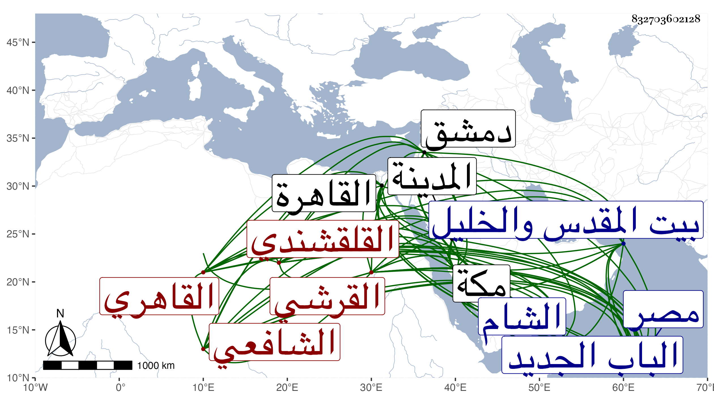

0902Sakhawi.DawLamic.ITO20230111-ara1.EIS1600.832703602128
Biography ID: 832703602128
557
علي بن أحمد بن إسماعيل بن محمد بن إسماعيل بن علي العلاء أبو الفتوح ابن القطب القرشي القلقشندي الأصل القاهري الشافعي الماضي عبد الرحمن وغيره من إخوته وأبوهم وابناه إبراهيم وأحمد . ولد في ذي الحجة سنة ثمان وثمانين وسبعمائة بالقاهرة وأمه شريفة فيما بلغني . ونشأ بها في كنف أبيه فحفظ القرآن وكتبا وأخذ الفقه عن ابن الملقن والبلقيني ثم عن ولده الجلال والبيجوري والشمس البرماوي وقريبه المجد وجماعة أقدم من هؤلاء الأربعة بل ودونهم كالزين القمني والتلواني والحديث عن الزين العراقي أخذ عنه أكثر شرح ألفيته ولازمه حتى كتب عنه الكثير من أماليه وقد رأيت المملى أثبت اسمه في عدة مجالس منها ثم عن ولده الولي بل وعن شيخنا والقراءات عن الفخر البلبيسي إمام الأزهر والتنوخي ثم عن الزراتيتي وكثيرا من الفنون كالأصلين والمعاني والبيان والمنطق عن العز بن جماعة ولازمه كثيرا حتى كان يتوجه إليه إلى الجامع الجديد بمصر ماشيا وربما يرتفق فى عوده بجمال السقايين وكذا لازم في الفنون البساطي وقرأ عليه في المختصر أو جميعه ومن قبلهما حضر دروس الشيخ قنبر والعربية عن الشمس الشطنوفي وغيره والفرائض عن الشمس الغراقي بل أخذ فيها أيضا وفي الحساب والجبر والمقابلة عن الشهاب بن الهائم وكذا عن الجمال المارداني مع اليسير من الميقات بل قرأ عليه إقليدس وعن ابن المغلي الحنبلي في الأصلين والعربية وسمع عليه في الحديث ، كذا سمع على الهيثمي وابن حاتم والتنوخي وابن أبي المجد والحلاوي والدجوي والشرف بن الكويك والجمال عبد الله العسقلاني والشموس الشامي والحبتي ومحمد بن قاسم السيوطي والنور الفوي في آخرين منهم الشمس المتبولي وعائشة الكنانية ، وحج في سنة إحدى عشرة وجاور بمكة وأخذ فيها العروض عن المجد إسماعيل الزمزمي ولازم الجمال بن ظهيرة حتى أخذ عنه معجمه وفضائل مكة للجندي وغيرهما وسمع أيضا على الزينين المراغي والطبري وابن سلامة وأبي الحسن بن عبد المعطي والكمال ابن ظهيرة في طائفة وبالمدينة النبوية على النور المحلي سبط الزبير والجمال الكازروني وغيرهما ، وارتحل إلى الشام في سنة أربع وثلاثين فأخذ بها عن حافظها ابن ناصر الدين ولازم العلاء البخاري حتى قرأ عليه رسالته في الموضوع وكتابه نزهة النظر في كشف حقيقة الإنشاء والخبر ورسالته المدعوة فاضحة الملحدين وغير ذلك وبالغ العلاء في تعظيم صاحب الترجمة وأذن له في إقرائها مع غيرها مما سمعه منه وغيره وزار بيت المقدس والخليل وأخذ بكل منهما عن جماعة وأجاز له خلق منهم المجد اللغوي ، وجد في هذه العلوم وغيرها حتى برع وأشير إليه بالفضيلة التامة وتنزل في الجهات وسكن الصيرمية برأس سوق أمير الجيوش مدة طويلة وكان تلقاها عن رفيقه النور القمني بحكم وفاته ، ونشأ متقللا من الدنيا إلى أن استقر به الدوادار الكبير تغرى بردى المؤذي في مشيخة مدرسته التي أنشأها بخط صليبة جامع ابن طولون وتدريسها وبعنايته استقر في تدريس الصلاحية المجاورة للشافعي ونظرها بعد وفاة التلواني وفي وظيفة خزانة الكتب بالأشرفية برسباي عقب الشمس بن الجندي وكان يحكي لنا في شأنها أنه حضر مبيع كتب مخلفة عن بعضهم ومن جملتها لسان العرب في اللغة بخط مؤلفه فلم يتنبه له كبير أحد فرام أخذه لحسن موقعه عنده وزاد فيه فانتدب عند ذلك للزيادة فيه بعض الأعيان بحيث بلغ ثمنا كثيرا لا ينهض الشيخ بالوفاء به وخشي من الزيادة فيه أن يلزم في الحال بثمنه فلا يقدر فربما يكون ذلك سببا لشيء فأعرض عنه مع تعلق خاطره به فلما صارت إليه هذه الوظيفة كانت النسخة بعينها أول شيء أخرج له حين التسليم والعرض والأعمال بالنيات ، ثم استقر بعده في تدريس الفقه بالشيخونية بعد وفاة القاياتي والحديث بجامع طولون بعد وفاة شيخنا وكذا في تصدير القراءات بالمدرسة الحسنية وعرض عليه قضاء الشافعية بدمشق فامتنع وترشح له بالديار المصرية فما قدر وما كان يكره ذلك وقرر في الخشابية في حياة العلم البلقيني فاستعفى منه وتصدى للتدريس قديما وسنه دون العشرين فانتفع به خلق من الأعيان وأخذ الناس عنه طبقة بعد طبقة فكان ممن أخذ عنه النور البلبيسي إمام الأزهر والشهاب الكوراني والبدر أبو السعادات البلقيني ونعمة الله الجرهي والبرهان بن ظهيرة وابن أبي السعود والجلال بن الأمانة والشرف بن الجيعان والنجم بن قاضي عجلون وفي غير الشافعية السنهوري وقريبه العز الكناني الحنبلي ولم يزل متصديا للإقراء والإفتاء إلى أن أخذ منه تدريس الصلاحية لشيخنا فكثر تألمه بسببه لا سيما وقد باشره أحسن مباشرة وتحرى فيه إلى الغاية وزاد في الأحكار وفي معاليم كثير من الطلبة وشرع في عمارة أوقافه والنظر في مصالحه وكان السبب في انفصاله عنه أنه التمس منه اخذ قطعة من الرحاب المجاورة له فامتنع فسلط عليه ناظر القرافة أبو بكر الشاطر فأفحش في حقه ثم تسببوا في انفصاله فتقلل من الإقراء من ثم بل يقال أنه ما سلك القرافة بعد هذا وكذا أوذي من قبل أخيه فصبر ، وكان إماما علامة متقدما في الفقه وأصوله والعربية والمعاني والبيان والقراءات مشاركا في غير ذلك ذا أنسة بالفن سريع القراءة والكتابة حسنهما متضلعا من علوم شتى نظارا بحاثا بحيث كان العز الكناني يقول ما رأيت أبحث منه وكان يرجحه على أبي الفضل المغربي وربما يقول قصارى أمره أن يصل لمرتبته يعني في أشياء وقال له العلاء بن المغلي أنت كثير التفف صحيح التأمل قوي الفكر مع التواضع وحسن العشرة ولطيف المماجنة والمداومة على التهجد والقيام والاعتكاف في شهر رمضان بتمامه في خلوته علو الأزهر وصحة العقيدة والمحاسن الجمة ولم يكن يأكل في رمضان اللحم إنما كان قوته فيه الخل والعسل والبقل والجبن الأقفاصي ونحو ذلك بل كان يقول أنه مكث نحو عشرين سنة لا يأكل من أطعمة الثوم شيئا ولم يشغل نفسه مع تقدمه بالتأليف بل كان يكتب على كثير من دروسه الكتابة المحكمة المتقنة التي يبالغ فيها في استيفاء النظر والتحقيق وعمل منسكا لطيفا متقنا ، وقد شهد له شيخنا في ترجمة والده من تاريخه أنه أمثل بني أبيه طريقة ووصفه في بعض ما قرأه عليه في سنة أربع وثلاثين بالشيخ الفاضل الأوحد مفيد الطالبين صدر المدرسين جمال الطائفة عمدة المفيدين انتهى . وكان يحكي لنا أنه رام أن يدربه ليكون معه كالهيثمى مع العراقي فما تيسر ، وقد لازمته مدة وقرأت عليه جملة بل كتب لي تقريظا على بعض تصانيفي وكان يقدمني على أخيه . مات بعد تعلله بالإسهال أشهرا في يوم الاثنين مستهل المحرم سنة ست وخمسين وصلى عليه في يومه بالأزهر تقدم الناس المناوي ودفن بتربة يقال لها تربة المولود خارج الباب الجديد وكانت جنازته مشهودة وحمل على أعناق الأمراء والفضلاء فمن دونهم وكثر الثناء عليه وعظم الأسف لفقده رحمه الله وإيانا .
